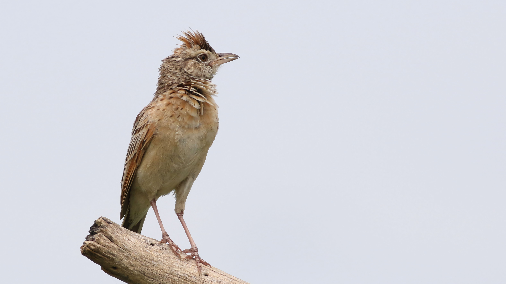

The Oriental Skylark is a small brown lark found in open grassland, agricultural land, and plains. Its streaked plumage provides excellent camouflage on the ground. Males are famous for their elaborate songs, often delivered during hovering or soaring display flights above the breeding territory. It can be distinguished from other small brown larks by its long, musical aerial song and characteristic crest and streaked plumage. Compared with the similar Indian Bush Lark, it is distinguished by the combination of features described above. Its preference for grasslands, agricultural fields, meadows, plains, and open country also helps separate it from species that use different habitats. Its characteristic behaviour, including usually forages on the ground; males sing during impressive aerial displays, provides another useful field clue. Taken together, these differences make it easier to distinguish from similar species when the bird is seen clearly.